Handcuffs.
WRITTEN AND ILLUSTRATED BY INSPECTOR MAURICE MOSER,
Late of the Criminal Investigation Department, Great Scotland Yard.
The ordinary connection of ideas between handcuffs and policemen does not need very acute mental powers to grasp, but there is a further connection, a philological one, which is only evident at first sight to those who have made a small acquaintance with the science of words.
The word "handcuff" is a popular corruption of the Anglo-Saxon "handcop," i.e., that which "cops" or "catches" the hands.
Now, one of the most common of the many slang expressions used by their special enemies towards the police is "Copper"—i.e., he who cops the offending member. Strange as it may seem, handcuffs are by no means the invention of these times, which insist on making the life of a prisoner so devoid of the picturesque and romantic.
We must go back, past the dark ages, past the stirring times of Greek and Roman antiquity, till we come to those blissful mythological ages when every tree and every stream was the home of some kindly god.
In those olden days there dwelt in the Carpathian Sea a wily old deity, known by the name of Proteus, possessing the gift of prophecy, the fruits of which he selfishly denied to mankind.
Even if those who wished to consult him were so fortunate as to find him, all their efforts to force him to exert his gifts of prophecy were useless, for he was endowed with the power of changing himself into all things, and he eluded their grasp by becoming a flame of fire or a drop of water. There was one thing, however, against which all the miracles of Proteus were of no avail, and of this Aristæus was aware.
So Aristæus came, as Virgil tells us, from a distant land to consult the famous prophet. He found him on the sea-shore among his seals, basking in the afternoon sun. Quick as thought he fitted handcuffs on him, and all struggles and devices were now of no avail. Such was then the efficacy of handcuffs even on the persons of the immortal gods.
Having established this remote and honourable antiquity, we are not surprised at the appearance of handcuffs in the fourth century B.C., when the soldiers of a conquering Greek army found among the baggage of the routed Carthaginians several chariots full of handcuffs, which had been held ready in confident anticipation of a great victory and a multitude of prisoners.
The nearest approach to a mention that we find after that is in the Book of Psalms: "To bind their kings in chains and their nobles in fetters of iron." But in the Greek, the Latin, Wickliffe's, and Anglo-Saxon Bible we invariably find a word of which handcuffs is the only real translation. It is also interesting to note that in the Anglo-Saxon version the kings are bound in "footcops" and the nobles in "handcops."
In the early Saxon times, therefore, we find our instrument is familiar to all and in general use, as it has continued to be to this day. But during the fifteenth and sixteenth centuries there is no instance of the use of the word "handcop"; its place is taken by "swivel manacle" and "shackbolt," the latter word being often used by Elizabethan authors.
Handcuffs, like other things, have improved with time. Up to 1850 there were two kinds in general use in England. One of the forms, most common in the earlier part of this century, went under the name of the "Figure 8." This instrument does not allow the prisoner even that small amount of liberty which is granted by its modern counterpart. It was chiefly used for refractory prisoners who resorted to violence, for it had the advantage of keeping the hands in a fixed position, either before or on the back of the body. The pain it inflicted made it partake of the nature of a punishment rather than merely a preventive against resistance or attack. It was a punishment, too, which was universally dreaded by prisoners of all kinds, for there is no more unbearable pain than that of having a limb immovably confined.
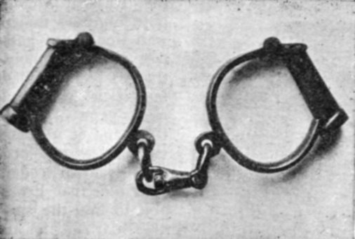
NO. 1.—THE "FLEXIBLE."
{kind=link}
The other kind of form known as the "Flexible" (No. 1) resembled in general outlines the handcuffs used every day by detectives.
Contrivances, chiefly the result of American ingenuity, for the rapid and effectual securing of prisoners have not been wanting, and among them the "Snap," the "Nippers" (No. 3) and the "Twister" must be mentioned.
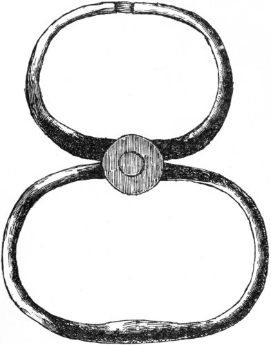
NO. 2.—THE "SNAP."
{kind=link}
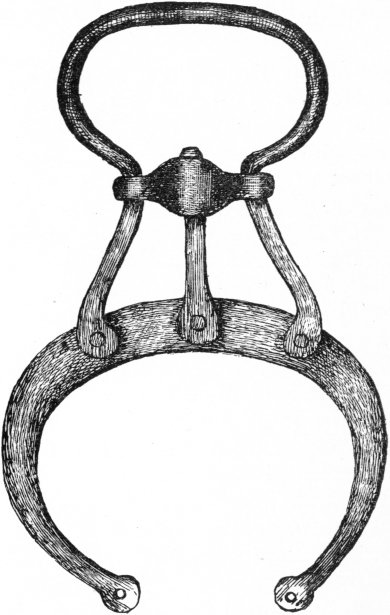
NO. 3.—"NIPPERS."
{kind=link}
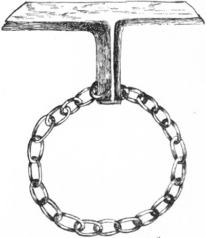
NO. 4.—THE "TWISTER"
{kind=link}
The "Snap" (No. 2) is the one which used to be the most approved of. It consists of two loops, of which the smaller is slipped on the wrists of the person to be arrested, the bars are then closed with a snap, and the larger loop is held by the officer. The manner in which the "Twister" (No. 4) was used savours very much of the brutal, and, indeed, the injuries it inflicted on those who were misguided enough to struggle when in its grasp caused its abolition in Great Britain.
Its simplicity and its efficacy, together with the cruelty, have recommended it for use in those wild parts of South America where the upholder of the laws literally travels with his life in his hands. It consists of a chain with handles at each end; the chain is put round the wrists, the handles brought together and twisted round until the chain grips firmly. The torture inflicted by inhuman or inconsiderate officers can easily be imagined. When we see the comparative facility with which the detective slips the handcuffs on the villain in the last act of Adelphi dramas, we are apt to be misled as to the difficulty which police officers meet with in the execution of one of the most arduous parts of their duty.
The English hand-cuffs (No. 1) are heavy, unwieldy, awkward machines, which at the best of times, and under the most favourable circumstances, are extremely difficult of application. They weigh over a pound, and have to be unlocked with a key in a manner not greatly differing from the operation of winding up the average eight-day clock, and fastened on to the prisoner's wrists, how, the fates and good luck only know. This lengthy, difficult, and particularly disagreeable operation, with a prisoner struggling and fighting, is to a degree almost incredible. The prisoner practically has to be overpowered or to submit before he can be finally and certainly secured.
Even when handcuffed, we present to a clever and muscular ruffian one of the most formidable weapons of offence he could possibly possess, as he can, and frequently does, inflict the deadliest blows upon his captor. Another great drawback is the fact that these handcuffs do not fit all wrists, and often the officer is nonplussed by having a pair of handcuffs which are too small or too large; and when the latter is the case, and the prisoner gets the "bracelets" in his hands instead of on his wrists, he is then in possession of a knuckle-duster from which the bravest would not care to receive a blow.
On the occasion of my arresting one of the Russian rouble note forgers, a ruffian who would not hesitate to stick at anything, I had provided myself with several sized pairs of handcuffs, and it was not until I had obtained the very much needed assistance that I was able to find the suitable "darbies" for his wrists. We managed to force him into a four-wheeler to take him to the police-station, when he again renewed his efforts and savagely attacked me, lifting his ironed wrists and bringing them down heavily on my head, completely crushing my bowler hat.
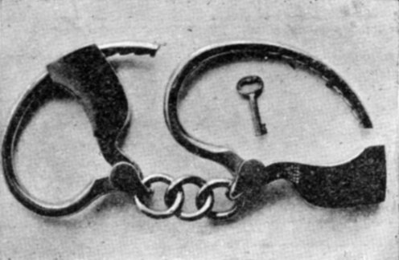
NO. 5—"AMERICAN HANDCUFF" (OPEN).
{kind=link}
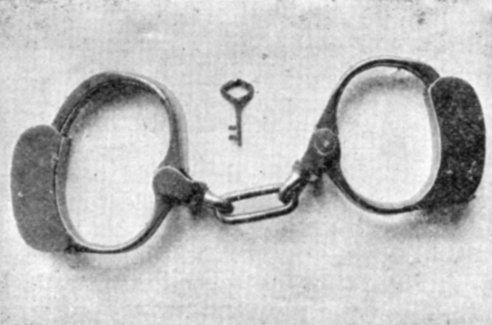
NO. 6—"AMERICAN HANDCUFF" (CLOSED).
{kind=link}
As the English handcuffs have only been formed for criminals who submitted quietly to necessity, it was considered expedient to find an instrument applicable to all cases. The perfected article comes from America (Nos. 5 and 6), and, being lighter, less clumsy, and more easily concealed, finds general favour among the officers at Scotland Yard. In fact, such are its advantages that we must presume that it differs considerably from the Anglo-Saxon "Hand-cop" and the somewhat primitive article used upon the unwilling prophet of the Carpathian Sea. This and the older kind, to which some of the more conservative of our detectives still adhere, are the only handcuffs used in England.
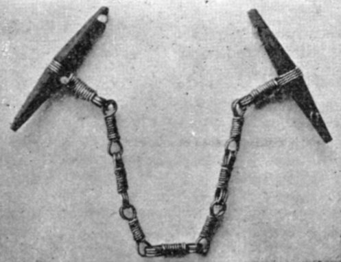
No. 7—"LA LIGOTE."
{kind=link}
The ingenious detective of France, where crime and all its appurtenances have reached such a state of perfection, is not without his means of securing his man (No. 7). It is called "La Ligote" or "Le Cabriolet." There are two kinds: one is composed of several steel piano strings, and the other of whip-cords twined together, and they are used much in the same way as the "Twister."
Any attempt to escape is quickly ended by the pain to which the officer who holds the instrument can inflict by a mere turn of his hand. One wrist only is under control, but as the slightest sign of a struggle is met by an infliction of torture, the French system is more effective than the English.
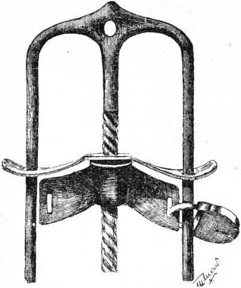
NO. 8.—"MEXICAN HANDCUFF."
{kind=link}
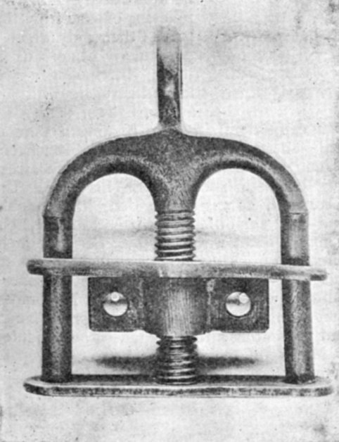
No. 9.—"LA POUCETTE."
{kind=link}
The Mexican handcuff (Nos. 8 and 9) is a cumbersome and awkward article, quite worthy of the retrograde country of its origin.
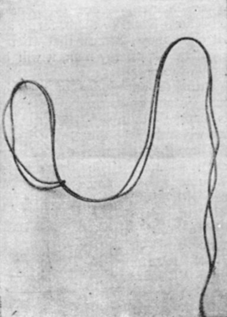
NO. 10.—"LA CORDE."
{kind=link}
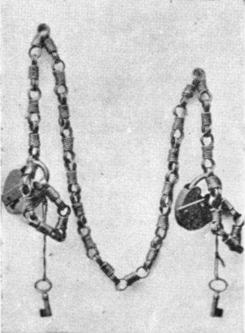
NO. 11.—"MENOTTE DOUBLE."
{kind=link}
No. 10 shows an effective method of handcuffing in emergencies. The officer takes a piece of whipcord and makes a double running knot: he ties one noose round the wrist of the prisoner, whose hand is then placed in his trousers pocket, the cord is lashed round the body like a belt, and brought back and slipped through the noose again. The prisoner when thus secured suffers no inconvenience as long as he leaves his hand in his pocket, but any attempt to remove it would cause a deal of suffering.
No. 11 is another handcuff of foreign make, and is merely used when a raid is about to be made, as it allows to a certain extent the use of the hands. It is useful for prisoners who are being conveyed by sea.
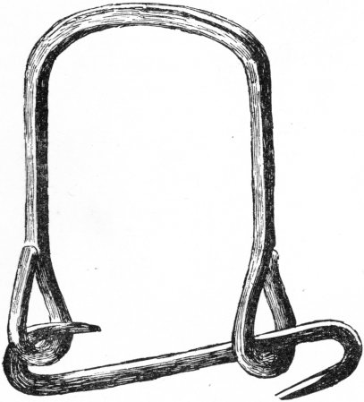
NO. 12.—"EASTERN HANDCUFF."
{kind=link}
No. 12 is mostly used in Eastern Europe.
My personal experience of handcuffs is small, because I dislike them, for in addition to their clumsiness, I know that when I have laid my hands upon my man, it will be difficult for him to escape.
My intimate knowledge of all kinds of criminals in all kinds of plights justifies me in saying that when they see the game is up they do not attempt resistance. The only trouble I have had has been with desperadoes and old offenders, men who have once tasted prison-life and have a horror of returning to captivity.
Expert thieves have been known to open handcuffs without a key, by means of knocking the part containing the spring on a stone or hard substance. It will be remembered that when the notorious criminal "Charles Peace" was being taken to London by train, he contrived, although handcuffed, to make his escape through the carriage window. When he was captured it was noticed that he had freed one of his hands.
I was once bringing from Leith an Austrian sailor who was charged with ripping open his mate, and as I considered that I had a disagreeable character to deal with, I handcuffed him. Naturally, he found the confinement irksome, and on our journey he repeatedly implored me to take them off promising that he would make no attempt to escape. The sincerity of his manner touched me and I released him, very fortunately for myself, for I was taken ill before reaching London, and, strange as it may appear, was nursed most tenderly by the man who had ripped a fellow mate.
In Belgium the use of handcuffs by police officers is entirely forbidden. Prisoners are handcuffed only on being brought before the Juge d'Instruction or Procureur du Roi, and when crossing from court to court. Women are never handcuffed in England, but on the Continent it is not an uncommon occurrence.
Regarding handcuffs generally, in my opinion not one of the inventions I have mentioned now in use is sufficiently easy of application. What every officer in the detective force feels he wants is a light, portable instrument by means of which he can unaided secure his man, however cunning and however powerful he may be. I myself suggest an application which would grip the criminal tightly across the back, imprisoning the arms just above the elbow joints. Such an instrument would cause him no unnecessary pain, while relieving officers from that part of their duty which is particularly obnoxious to them, viz., having a prolonged struggle with low and savage ruffians.
I cannot refrain from relating a piquant little anecdote told to me by a French colleague, who had occasion to make an arrest, and came unexpectedly on his man. Unfortunately he was unprovided with handcuffs and was somewhat at a disadvantage, but being a quick-witted fellow, he bethought himself of an effectual expedient. Taking out his knife he severed the prisoner's buttons which were attached to his braces, thus giving the man occupation for his hands and preventing a rapid flight. I am indebted to M. Goron, Chief of the Detective Department in Paris, and other colleagues for some of the specimens here reproduced by me.